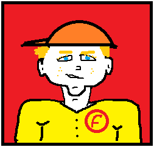

Porque Foguinho Lanches? De onde vem esse nome Foguinho?
Berinardson trabalhou como chapeiro por mais de 20 anos em várias lanchonetes. Mas o pessoal achava muito difícil falar o nome dele. Daí veio o apelido: foguinho. No início Berinaldo estranhou mas acabou gostando e hoje, mesmo não sendo mais chapeiro, continua conhecido como Foguinho.
A Foguinho lanches no início era um treiller. Berinardson juntou todas suas economias do trabalho de chapeiro e comprou um treiller, instalou em frente de sua casa e ali surgiu o Foguinho Lanches
Dois anos depois, com o grande número de apreciadores dos lanches do Berinardson, a Foguinho Lanches mudou para um ponto comercial alugado, no bairro, e depois a lanchonete ficou pequena para tantos clientes. Foi quando a Foguinho Lanches mudou para sua sede própria no centro da cidade

O sucesso da Foguinho Lanches foi tão grande que Berinardson foi procurado por pessoas de outras cidades interessadas em sua receita e no modelo de negócios. Foi quando surgiu a franquia Foguinho Lanches. Hoje já são 213 lanchonetes espalhadas por todo território nacional, produzindo os mais deliciosos lanches do planeta